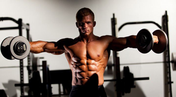
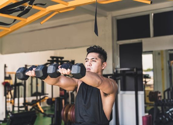
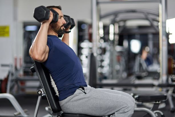
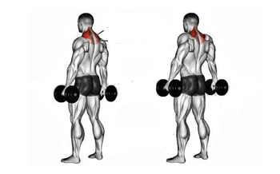
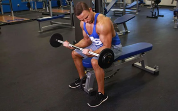
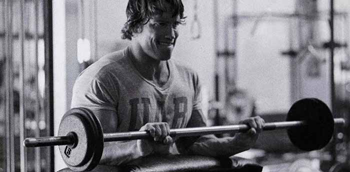
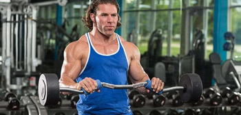
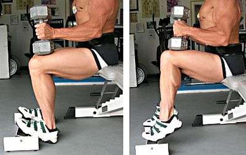
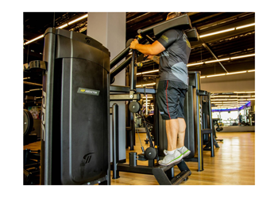

Ombro, Antebraço e Panturrilhas.
Elevação lateral com halteres.

- Afaste os braços ao lado do seu tronco e as mãos para a direção do corpo;
- Mantenha os cotovelos levemente flexionados;
- Levante os braços até que os cotovelos e os pesos fiquem alinhados aos ombros;
- Retorne devagar à posição inicial.
Clique aqui para ver a execução em vídeo.
Elevação frontal com halteres.

- Coloque os braços para frente do corpo e esticados;
- Eleve os dois braços juntos para cima até a altura do ombro;
- Ao chegar no topo, mantenha os braços por mais alguns segundo;
- Retorne devagar à posição inicial.
Clique aqui para ver a execução em vídeo.
Desenvolvimento de ombro sentado.

- Sente-se em um banco e apoie as costas no encosto;
- Segure os halteres e mantenha-os com as palmas das mãos voltadas para a frente;
- Depois, mantenha o peito aberto, os cotovelos para os lados em um ângulo de 90º e olhe para frente;
- Levante o peso e vá esticando os cotovelos para cima até que fique completamente esticado;
- Volte o braço até a linha do ombro e suba novamente;
Clique aqui para ver a execução em vídeo.
Encolhimento de ombros com halteres.

- Pegue um par de halteres e escolha um peso que te desafie, nem tão leve ou pesado;
- Em seguida, segure os peso e coloque-os próximos ao corpo;
- Depois, é só subir os ombros, sem dobrar os cotovelos e contraindo os trapézios;
- Após sentir ambos os lados do pescoço, volte o peso lentamente à posição inicial;
- Lembre-se de manter a descida controlada;
Clique aqui para ver a execução em vídeo.
Rosca de Punho.

- Sente-se sobre um banco e pegue a barra com uma pegada supinada (dorso da mão voltado para baixo e palma da mão voltada para cima);
- Afaste as mãos na barra até que fiquem paralelas aos ombros;
- Repouse o dorso do antebraço sobre as coxas;
- Dobre os punhos para baixo abaixando a barra;
- Faça o movimento de rosca com os punhos e erga novamente a barra (tente realizar o exercício com repetições prolongadas).
Clique aqui para ver a execução em vídeo.
Rosca de Punho Invertido.

- Sente-se sobre um banco e pegue a barra com uma pegada pronada (dorso da mão voltado para cima e palma da mão voltada para baixo);
- Afaste as mãos na barra até que fiquem paralelas aos ombros;
- Repouse o dorso do antebraço sobre as coxas, caso prefira pode apoiar na borda do banco;
- Dobre os punhos para baixo abaixando a barra;
- Faça o movimento de rosca com os punhos e erga novamente a barra (tente realizar o exercício com repetições prolongadas).
Clique aqui para ver a execução em vídeo.
Rosca inversa.

- De pé, segurar a barra com as mãos com a pegada pronada. Pode ser feita com a barra reta (imagem do início do artigo) ou em W como na imagem acima.
- Flexionar o cotovelo de maneira controlada até contrair ao máximo o bíceps. Manter os punhos neutros e os cotovelos apoiados na lateral do tronco. Os ombros devem permanecer imóveis durante o exercício.
- Retornar lentamente à posição inicial, estendendo os cotovelos.
Clique aqui para ver a execução em vídeo.
Elevação de panturrilhas sentado.

- Sentar em um banco de forma a que os joelhos fiquem dobrados em um ângulo de 90º;
- Colocar um haltere sobre cada joelho, mantendo os pés bem apoiado no chão;
- Levantar o calcanhar, mantendo a ponta do pé no chão;
- Segurar a posição por 1 segundo e regressar à posição inicial com os pés bem apoiados.
Clique aqui para ver a execução em vídeo.
Elevação de panturrilhas na máquina.

- Coloque apenas as pontas dos pés na plataforma e deixe os calcanhares para fora. Os dedos devem ficar voltados para a frente. Deixe o corpo reto, especialmente a coluna.
- Então, comece o exercício empurrando os quadris para cima e estendendo os joelhos para subir o aparelho. Mantenha as pernas retas e evite encolher os ombros durante o movimento.
- Em seguida, abaixe os calcanhares fazendo uma dorsiflexão dos tornozelos. Neste momento, você deve flexionar os tornozelos em um movimento controlado e sentir as panturrilhas alongando.
- Solte o ar enquanto eleva os calcanhares e puxe o ar novamente (inspire) enquanto desce.
Clique aqui para ver a execução em vídeo.